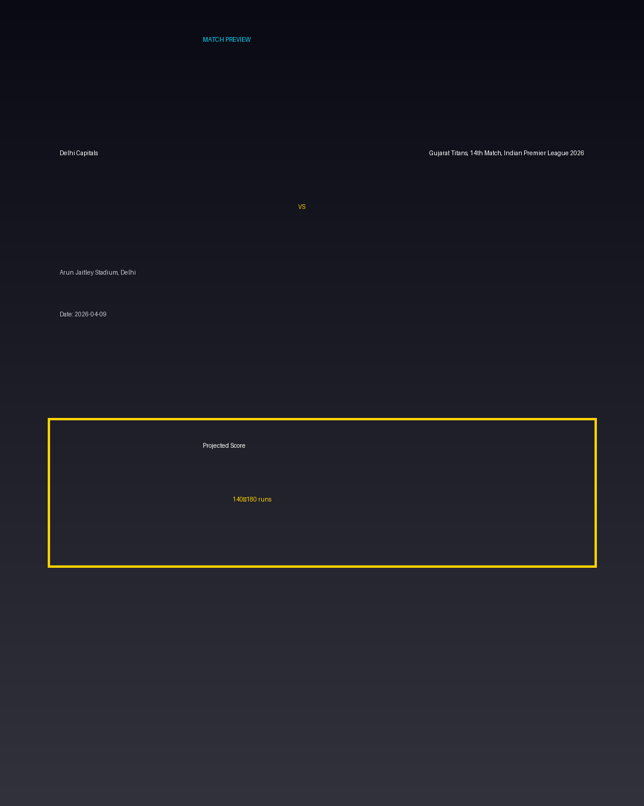

Delhi Capitals vs Gujarat Titans, 14th Match, Indian Premier League 2026
Date: 2026-04-09
Venue: Arun Jaitley Stadium, Delhi


Form Guide
Delhi Capitals: 🟩 🟥 🟩 🟩 🟥
Gujarat Titans, 14th Match, Indian Premier League 2026: 🟥 🟩 🟥 🟥 🟩
Pitch Report
Balanced wicket with moderate scoring conditions.
Projected Score
140–180 runs
Key Players
- Delhi Capitals Key Batter — Batsman
- Delhi Capitals Strike Bowler — Bowler
- Gujarat Titans, 14th Match, Indian Premier League 2026 Key Batter — Batsman
- Gujarat Titans, 14th Match, Indian Premier League 2026 Strike Bowler — Bowler
Advanced Win Probability
Delhi Capitals: 63.3%
Gujarat Titans, 14th Match, Indian Premier League 2026: 36.7%
AI Match Prediction
Based on venue conditions, a projected scoring range of 140–180 runs, recent form (with Delhi Capitals appearing slightly stronger), and the pitch profile ('Balanced wicket with moderate scoring conditions.'), this matchup appears to present Delhi Capitals entering as clear favorites. Early momentum and top-order execution will likely determine the winner.
